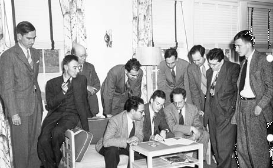

After graduating in 1939 with a bachelor's degree in Physics, Bohm was invited to pursue his master's at the California Institute of Technology
However, it wasn't long before his work and impressive intellect caught the eye of another physicist,
and in the Spring of 1941, Robert Oppenheimer—the father of the atomic bomb—invited Bohm to complete his PhD at UC Berkely.

As a member of Oppenheimer's team, Bohm studied collisions between protons and deuterons that would prove extremely valuable to the United States' building of the atomic bomb.
When Oppenheimer was chosen to lead the project at Los Alamos, he wished to take Bohm with him.
However, Bohm had previously joined a communist party for a mere 9 months, but that was enough for the U.S. to ban Bohm from joining Oppenheimer in fear that Bohm was a communist spy.
The government quickly classified his work and, unable to continue his thesis, he quickly was granted his PhD in theoretical physics in 1943.